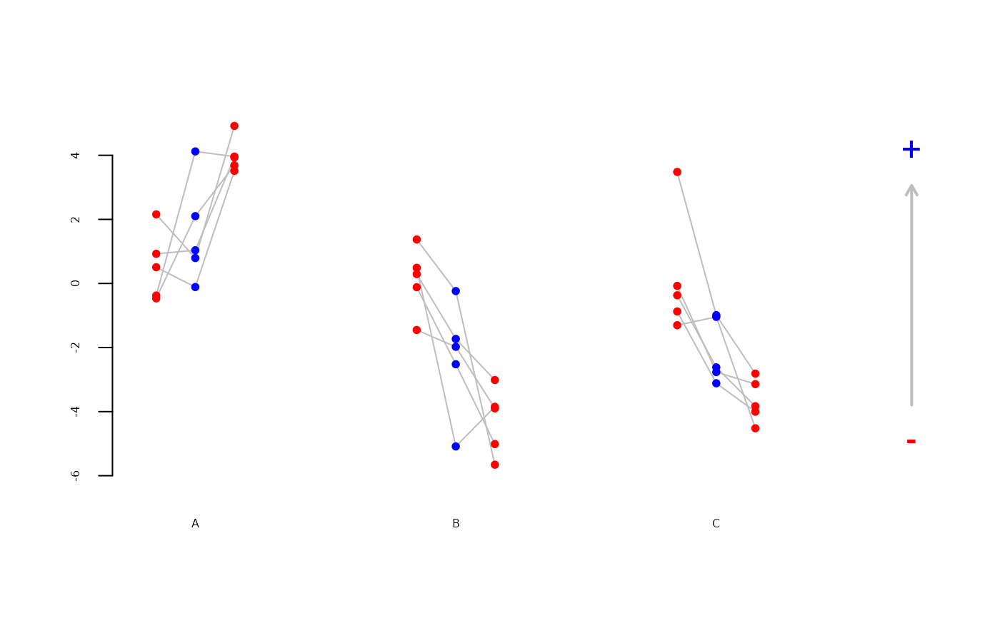

Visualises differences within sets of three values in different settings.
Usage
plot_change(
x,
y0,
y1,
y2,
dist = 0.15,
main = "",
cex.axis = 0.5,
cex.main = 1,
increase = TRUE
)
Arguments
- x
setting: character vector
- y0
values on the left: numeric vector
- y1
values in the centre: numeric vector
- y2
values on the right: numeric vector
- dist
horizontal distance between points
- main
title
- cex.axis
numeric
- cex.main
numeric
- increase
change to arrow NULL, up, down
Examples
m <- 3 # number of settings
n <- 5 # number of repetitions
x <- rep(LETTERS[1:m],each=n)
y0 <- stats::rnorm(n*m,mean=0)
y1 <- stats::rnorm(n*m,mean=ifelse(x=="A",2,-2))
y2 <- stats::rnorm(n*m,mean=ifelse(x=="A",4,-4))
plot_change(x,y0,y1,y2)
